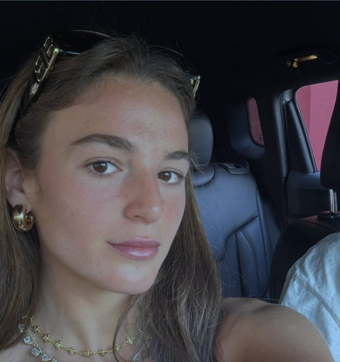

7 ottobre 2023
Maya Regev · 21 anni

«Mi hanno sparato, papà.»
Maya e suo fratello Itay erano rientrati in Israele la sera prima, dopo tre settimane di vacanza in Messico con la madre. Presero in prestito l'auto di famiglia e andarono insieme al festival musicale Nova, vicino al kibbutz di Re'im.
Quando i terroristi di Hamas attaccarono il festival, Maya chiamò il padre Ilan. Gli disse che le avevano sparato, lo ripeté più volte, e poi che li stavano uccidendo. Lui le chiedeva dove fosse, la pregava di mandargli la posizione e di trovare un posto dove nascondersi. Prima che la linea cadesse Maya fece in tempo a dirgli che gli voleva bene e che erano bloccati in macchina, senza via d'uscita.
Il telefono di Ilan registrò la chiamata senza che lui se ne accorgesse. La scoprì solo alcuni giorni più tardi e la famiglia decise di renderla pubblica. Quando la CNN la trasmise, il 21 ottobre 2023, Maya e Itay erano tra i circa 210 ostaggi trattenuti a Gaza, e la madre Maria non l'aveva mai ascoltata.
Ferita a una gamba, Maya era stata portata a Gaza. Venne liberata il 25 novembre 2023, durante la tregua. Itay tornò a casa il 30 novembre.
Fonte originale
Trascrizione del servizio CNN del 21 ottobre 2023, con la registrazione della telefonata resa pubblica dalla famiglia. La pagina è in inglese. Il racconto in italiano è dell'Associazione Italia Israele di Alessandria.
Apri la fonte · CNN